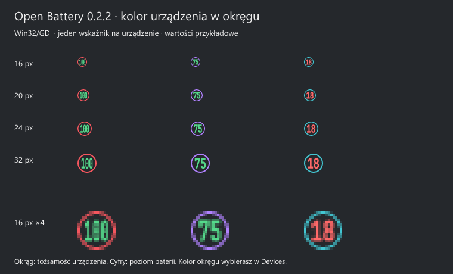
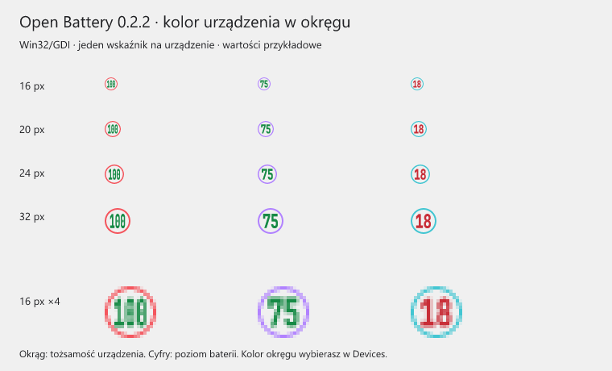
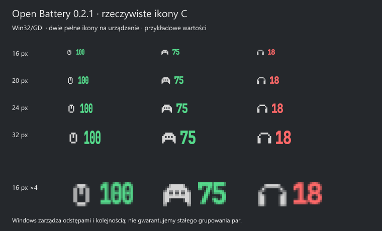
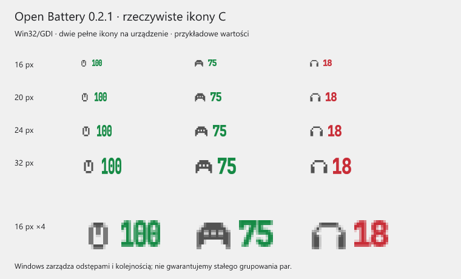
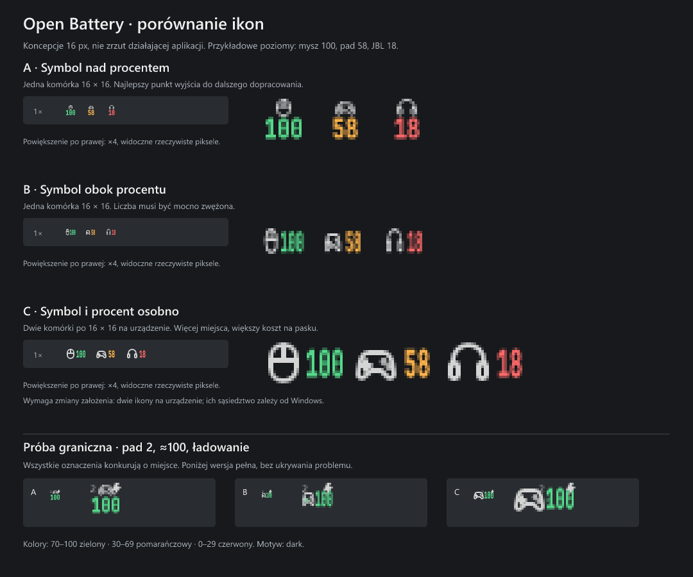
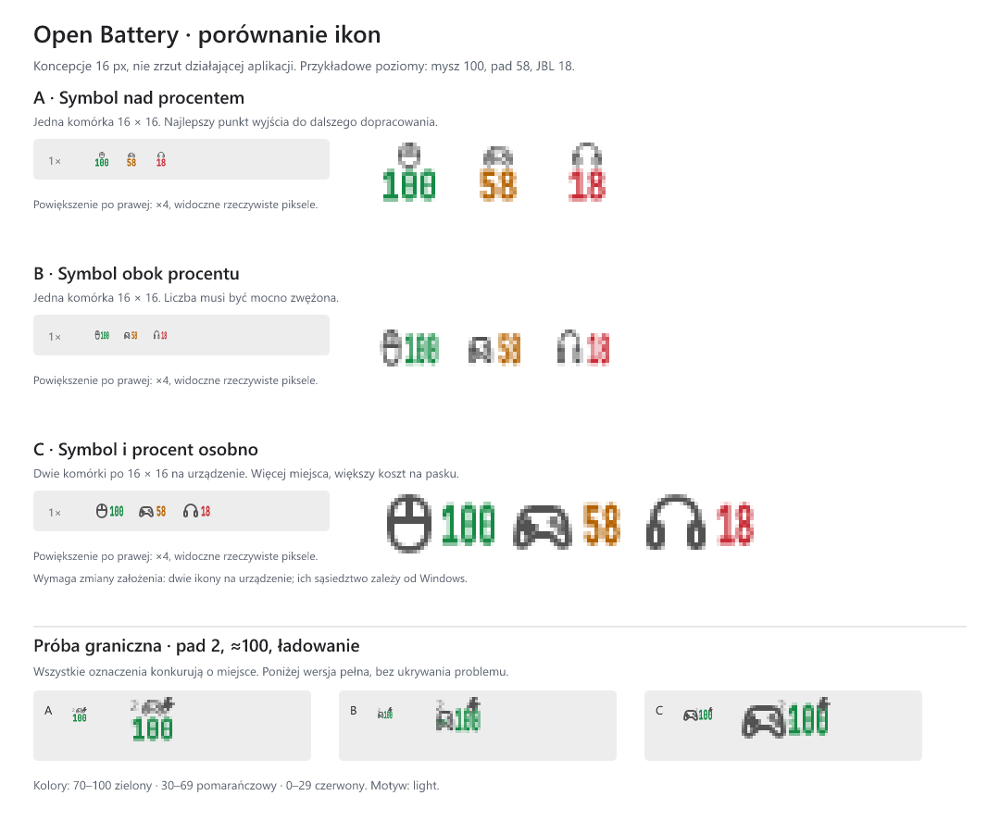
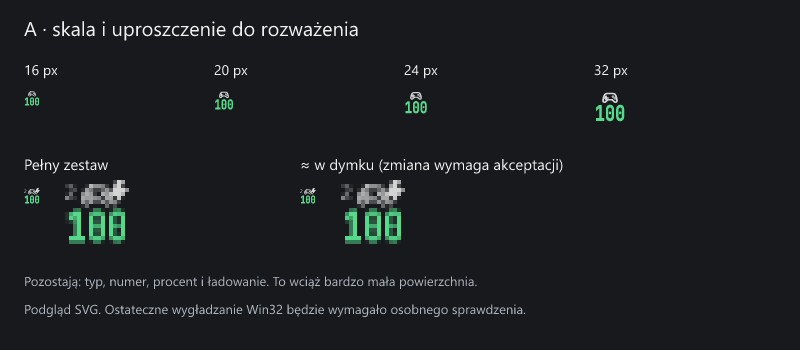
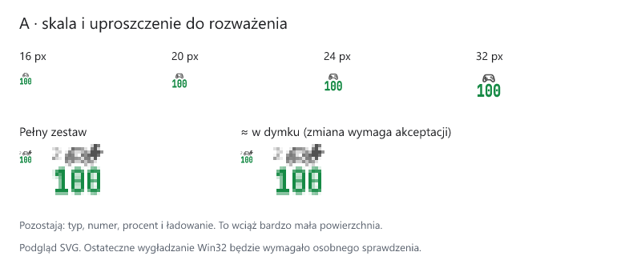
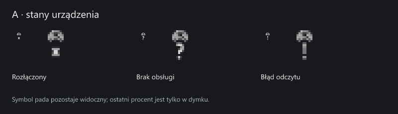
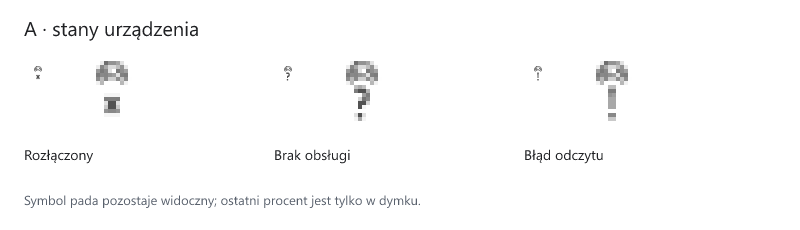

Okrąg oznacza urządzenie, kolor cyfr poziom baterii. Kolor okręgu wybierasz w Devices.


Wybrany po próbie na pasku: pełny symbol i pełny procent. Każde urządzenie zajmuje dwa miejsca.


Otwórz przy powiększeniu przeglądarki 100%. Obrazy mają naturalną szerokość 1080 px; na węższym ekranie są pomniejszane. To podglądy koncepcyjne SVG, nie produkcyjny renderer Win32.





